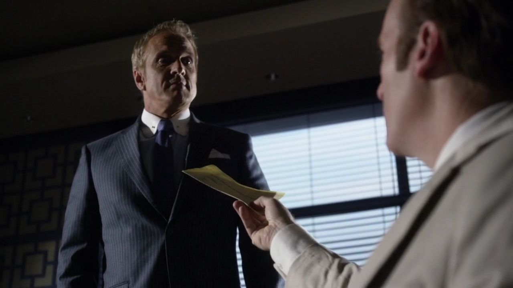

01
HHM / 交接沙鹬案
他终于收下条件，也交还每天照顾哥哥的位置。

剧情事实吉米接受 HHM 接手案件的安排，取得约定费用，并向霍华德说明自己已知道查克阻止聘用。他要求律所接手查克的日常照护。 [1][2]
这一场为什么重要 · 个人解读
这不是原来那个靠得到职位证明自己的入口。他把工作交出去，也把持续送到家里的自己撤出来。请求别人接手照顾，说明愤怒没有被简单写成任由哥哥失去生活支持；边界是在关系受伤之后重新安排劳动。
因此 →案件有了接手者，他自己的情绪却还无处安放。